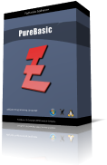

| Introduction | News | Download | Screenshots | Ordering | Support | FAQ | Links |
|

PureBasic is a native 32-bit and 64-bit programming language based on established BASIC rules. The key features of
PureBasic are portability (Windows, Linux and MacOS X are currently supported), the production of very fast
and highly optimized executables and, of course, the very simple BASIC syntax. PureBasic has been created for the
beginner and expert alike. We have put a lot of effort into its realization to produce a fast, reliable system
friendly language.
In spite of its beginner-friendly syntax, the possibilities are endless with PureBasic's advanced features such as pointers, structures, procedures, dynamically linked lists and much more. Experienced coders will have no problem gaining access to any of the legal OS structures or API objects and PureBasic even allows inline ASM. The main features of PureBasic - Huge set of internal commands (1400+) to quickly and easily build any application or game - All BASIC keywords are supported - Very fast compiler which creates highly optimized executables - No external DLLs, runtime interpreter or anything else required when creating executables - Procedure support for structured programming with local and global variables - Full unicode support - Access to full OS API for advanced programmers - Easy but very fast 2D game support through dedicated libraries (DirectX, SDL, ...) - Easy and high quality 3D support based on OGRE - Optimal use of the available hardware by using highly optimized (assembly) commands - Source code is portable between Windows, MacOS X and Linux - Dedicated editor and development environment - Powerful integrated debugger and profiler to easily trace and analyze code Specific features depending on the OS Windows Linux MacOS X Do you want to know what users think about PureBasic ? User comments |